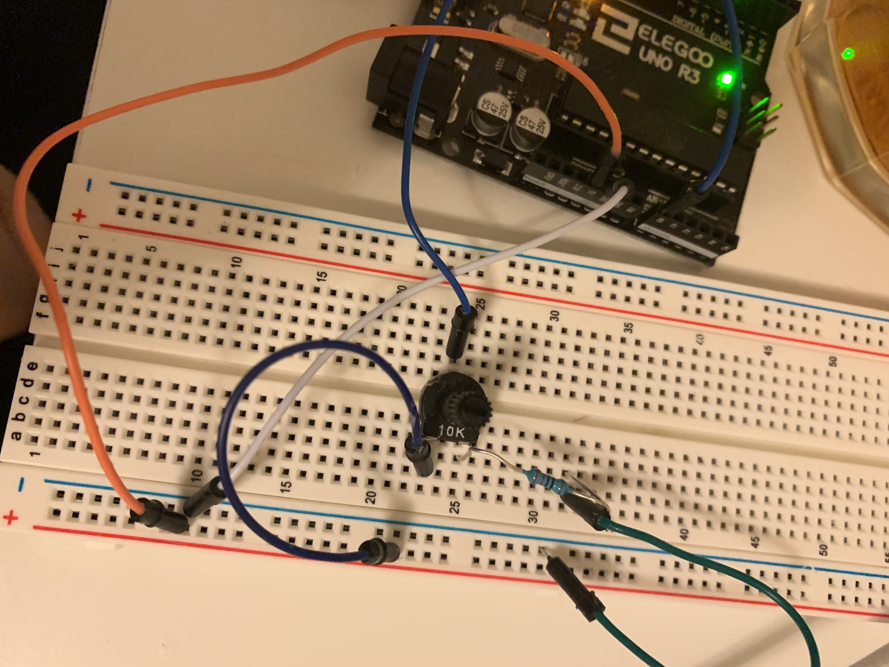
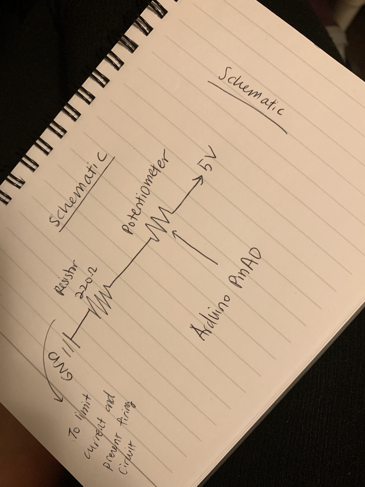

Sixth assignment
Circuit

Creating an interactive webpage with p5.js that interacts with data that’s coming from your arduino over serial.
Schematic
Fireware for Arduino
void setup() {
Serial.begin(9600);
}
void loop() {
int sensor = analogRead(A0);
Serial.println(sensor);
delay(50);
}
Code Snippet p5js
var serial; // variable to hold an instance of the serialport library
var portName = '/dev/cu.usbmodem14311' // the name of my port
var datain; // some data coming in over serial
function setup() {
serial = new p5.SerialPort(); // make a new instance of the serialport library
serial.on('list', printList); // set a callback function for the serialport list event
serial.on('connected', serverConnected); // callback for connecting to the server
serial.on('open', portOpen); // callback for the port opening
serial.on('data', serialEvent); // callback for when new data arrives
serial.on('error', serialError); // callback for errors
serial.on('close', portClose); // callback for the port closing
serial.list(); // list the serial ports
serial.open(portName); // open a serial port
createCanvas(1200, 800); // creates the canvas for our webpage drawing
background(0x08, 0x16, 0x40); // sets the background of the drawing
}
// get the list of ports:
function printList(portList) {
// portList is an array of serial port names
for (var i = 0; i < portList.length; i++) {
// Display the list the console:
print(i + " " + portList[i]);
}
}
// Prints out whether the program is connected to the server
function serverConnected() {
print('connected to server.');
}
// Prints out whether the serial port was opened
function portOpen() {
print('the serial port opened.')
}
// Prints out whether there was an error with the serial port
function serialError(err) {
print('Something went wrong with the serial port. ' + err);
}
// Prints out whether the serial port is closed
function portClose() {
print('The serial port closed.');
}
// Prints out the readings from the port
function serialEvent() {
if (serial.available()) {
datain = Number(serial.readLine());
console.log(datain);
}
}
//Creating a variable for new radius
var recOne;
function draw() {
//mapping value from potentiometer and scaling to 200 from 0
var rect = map(datain, 0, 1023, 0, 200);
//if radius is not equal to new radiusit it resets background
if (rect != recOne) {
background(0x08, 0x16, 0x40);
//resizing the triangle - collasping / scaling circle
ellipse(400, 300, 300, rect);
//resizing the triangle - collasping / scaling triangle
triangle(30, 30, 130, rect, 120, 50);
//maintain current radius
var recOne = rect;
}
}
The draw function resizes a circle and a triangle controlling values from a potentiometer.
Circuit's operation